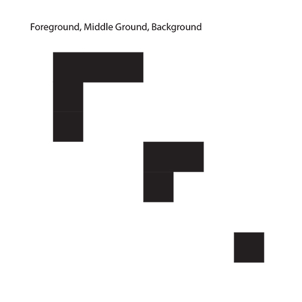

This Gestalt project was the first project in this class. Gestalt method is used to help understanding how things and shapes are perceived in our brain in design. Through understanding the principle, we learned where the viewers' eyes go depending on the placement and shapes of the design. This project is created using 9 black squares placing on a white background in Adobe Illustrator for each principle utilize.
- Foreground, Middle Ground, Background: In order to convey the illusion that the shapes are placed in a three-dimensional way. I arranged the squares in three groups, placed from the lower-righthand corner towards the upper-lefthand corner to make them appear to be in front of one another.
- Figure/Ground: I arranged the boxes together to form the boarder of another shape to create a stronger design and let the viewers perceive it as the shape formed.
- Similarity: The principle is to create a noticeable difference among other similar shape. To achieve this, I form the squares into four rectangular pieces and one square piece, which leads to viewers be able to recognize the differences easily.
- Proximity: The goal of this principle is to create a design for viewers to perceive them as two separate groups of shape. I placed one square on the lower-righthand corner and the rest on the upper-lefthand corner to form a larger square.
- Closure: I arranged the squares so the seems to form the corner of a larger square to create an illusion for viewers to view the design as a larger square even though the edges were not completely closed.
- Continuation: I arranged the squares to make them form a line across the screen so the viewers’ eyes can follow the design when viewing it. I left the last square slightly cut off by the edge to create a feel that the line continues outside the frame.
- Symmetry: I arranged my boxes mirrored and symmetrical from left to right.
|
 |